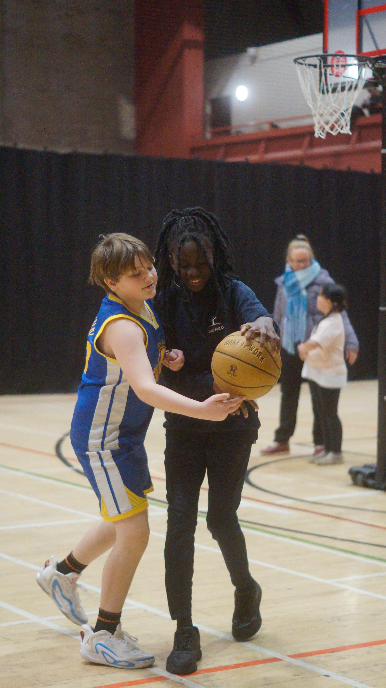

A clear, structured journey from first steps in sport to more advanced development — with support to find the right next step.
Wherever a young person starts, we help them keep progressing.
First introduction to basketball and sport. Fun, pressure-free sessions focused on movement, coordination and enjoyment. Our Grassroots Basketball programme (ages 5–10) welcomes beginners.
Players who have the basics and are ready to build real skills. Structured coaching in dribbling, shooting, passing, defence and basic plays. Introduction to small-sided competitive games.
For players ready to be challenged further. Individual development, decision-making, game situations and applying skills in competitive play. Our Development Basketball programme (ages 11–15) welcomes players with different levels of experience.
YSP is an independent sports development business, not a club. Players from any club or team can train with us, and we help families think about the right next step. That might be a local club (Dream Chasers Sheffield is one option, but not the only one), school or college basketball, or other opportunities. Players are free to choose the route that suits them, and we do not promise selection or particular outcomes.
Older players may have opportunities to help with junior sessions and develop leadership skills, giving something back to the community.

New players can book a free taster session. Grassroots Basketball is for ages 5–10 and Development Basketball is for ages 11–15. Our coaches are happy to talk through which sessions suit your child.
Book a Free TasterThe pathway starts with one session. Book a free taster to get started.
View All Sessions